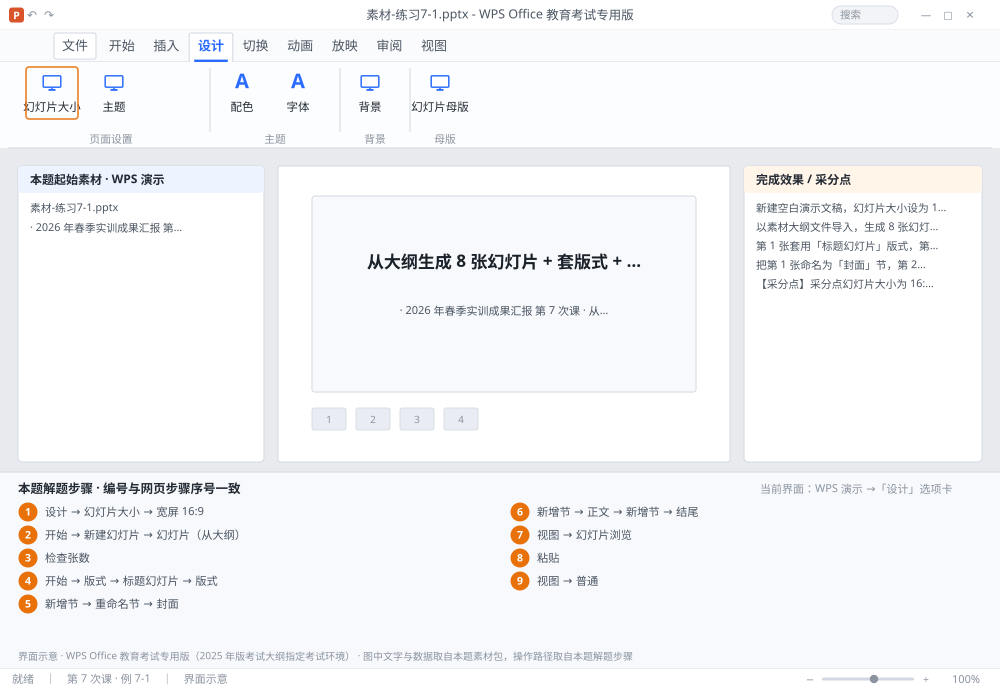

完成比对文档 · 例 7-1
从大纲生成 8 张幻灯片 + 套版式 + 分 3 节 + 重排 ｜ 第 7 次课 / WPS 演示 ｜ 网页：实操-演示1.html ｜ 考试环境：WPS Office 教育考试专用版（2025 年版考试大纲指定考试环境）
用途 本页按修订后的题目要求与解题步骤生成，是交卷自查的结果基准：
逐项列出每一步应出现的可复核结果，配合模拟操作截图与解题结果文件使用。
它不是素材包的一部分，不会预置答案动作；起始素材仍从本题素材包下载。
一、本题起始素材包
目录：练习素材/练习7-1-从大纲生成幻灯片/ ｜
下载包：练习素材/下载/练习7-1-从大纲生成幻灯片.zip
素材-练习7-1.pptx大纲.txt素材说明.txt
二、题目要求
- 新建空白演示文稿，幻灯片大小设为 16:9，保存为 学号-姓名-练习7-1.pptx。
- 以素材大纲文件导入，生成 8 张幻灯片（1 张标题 + 7 张内容）。
- 第 1 张套用「标题幻灯片」版式，第 2~7 张套「标题和内容」，第 8 张套「仅标题」。
- 把第 1 张命名为「封面」节，第 2~7 张为「正文」节，第 8 张为「结尾」节。
- 在幻灯片浏览视图下把第 3 张与第 4 张对调。
- 保存。
三、解题步骤（编号与下方核对表、截图编号一致）
- 新建并设尺寸。Ctrl+N 新建 →「设计」→「幻灯片大小」→「宽屏 16:9」。建完立刻 F12 存为 学号-姓名-练习7-1.pptx。
- 导入大纲。「开始」→「新建幻灯片」下拉 →「幻灯片（从大纲）」→ 选中大纲文件 → 打开。每个一级标题生成一张幻灯片，二级标题成为该页的项目符号。
- 检查张数。左侧缩略图应为 8 张；不足说明大纲里有多余空行或层级错误，重新导入。
- 套版式。选中第 1 张 →「开始」→「版式」→「标题幻灯片」；选中第 2~7 张（按住 Shift 连选）→「版式」→「标题和内容」；第 8 张 →「版式」→「仅标题」。
- 新增第 1 节。右键第 1 张缩略图 →「新增节」→ 右键节名 →「重命名节」→ 输入「封面」。
- 新增其余两节。右键第 2 张 →「新增节」→ 重命名「正文」；右键第 8 张 →「新增节」→ 重命名「结尾」。节的本质是「分组」，只影响编辑与放映时的定位，不改变页面内容。
- 切浏览视图。「视图」→「幻灯片浏览」→ 所有幻灯片以网格排列。
- 重排。点住第 3 张 → 拖到第 4 张右侧 → 松开，两张对调。也可剪切后「粘贴」到目标位置前。
- 回普通视图并保存。「视图」→「普通」→ Ctrl+S。
四、完成效果 / 采分点
采分点幻灯片大小为 16:9 · 共 8 张 · 第 1 张为标题幻灯片版式 · 第 2~7 张为标题和内容 · 第 8 张为仅标题 · 三个节名称正确 · 第 3、4 张已对调
五、逐项完成核对表
| 步骤 | 关键操作路径 | 应出现的结果（可复核） |
|---|
| 1 | 新建并设尺寸 | 「设计」、「幻灯片大小」、「宽屏 16:9」、F12、学号-姓名-练习7-1.pptx |
| 2 | 导入大纲 | 「开始」、「新建幻灯片」、「幻灯片（从大纲）」 |
| 3 | 检查张数 | 8 张 |
| 4 | 套版式 | 1 张、「开始」、「版式」、「标题幻灯片」、7 张 |
| 5 | 新增第 1 节 | 1 张、「新增节」、「重命名节」、「封面」 |
| 6 | 新增其余两节 | 2 张、「新增节」、「正文」、8 张、「结尾」 |
| 7 | 切浏览视图 | 「视图」、「幻灯片浏览」 |
| 8 | 重排 | 3 张、4 张、「粘贴」 |
| 9 | 回普通视图并保存 | 「视图」、「普通」 |
六、模拟操作截图

界面示意 · WPS Office 教育考试专用版 · 橙色编号与本题解题步骤序号一致；
图中文字与数据取自本题素材包，功能入口取自本题解题步骤。
核对方法：按网页解题步骤完成并另存自己的成稿后，逐行比对本表第 3 列的
参数、公式、区域、文件名与对象数量；再对照网页「完成效果 / 采分点」检查版式是否一致。